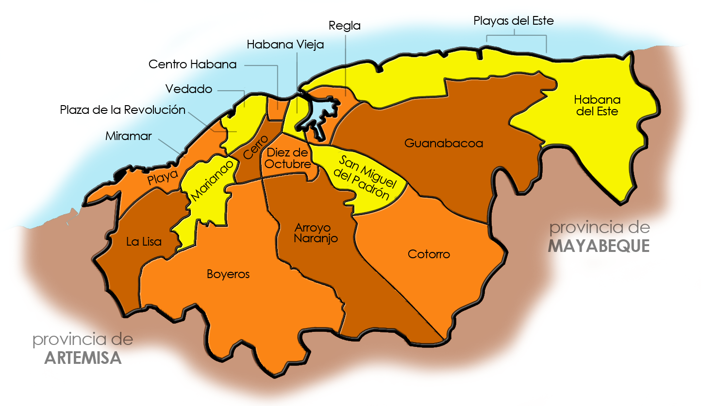

CUBA
Cuba, oficialmente República de Cuba, es un país soberano insular, asentado en las Antillas del mar Caribe. El territorio está organizado en quince provincias y un municipio especial con La Habana como capital y ciudad más poblada.


CUBA
Cuba, oficialmente República de Cuba, es un país soberano insular, asentado en las Antillas del mar Caribe. El territorio está organizado en quince provincias y un municipio especial con La Habana como capital y ciudad más poblada.
La Habana es la capital de Cuba. La arquitectura colonial española en el centro de la Habana Vieja del siglo XVI incluye el Castillo de la Fuerza Real, un fuerte y un museo marítimo.
Miguel Mario Díaz-Canel Bermúdez es un ingeniero electrónico y político cubano. Desde el 10 de octubre de 2019 es el presidente de la República de Cuba y desde 2021 se desempeña como primer secretario del Partido Comunista de Cuba. Es el primer mandatario de la isla en nacer después de la Revolución cubana.
al norte se encuentran los Estados Unidos y Bahamas, al oeste México, al sur las Islas Caimán y Jamaica, y al este la isla La Española.
Las actividades agrícolas en la isla componen el 4% del PIB, mientras que la industria llega al 22,7% y los servicios al 73,4%, según datos de 2017 del CIA World Factbook. Las restricciones impuestas en el contexto de la pandemia de coronavirus golpearon duro en la isla.
Los toures o viajes que nadie se puede perder en Cuba son:
| TOUR 1 | TOUR 2 | TOUR 3 | TOUR 4 | TOUR 5 | |
|---|---|---|---|---|---|
| LUGAR | VIÑALES | PLAYA PILARES | PLAZA DE LA CATEDRAL | FABRICA DE ARTE CUBANO | PLAYA SIRENA |